At Planck Energies, I worked on developing a passive radiative cooling paint, including pigment synthesis, paint formulation testing, and characterization. To facilitate outdoor tests, I built a live temperature monitoring dashboard from scratch.
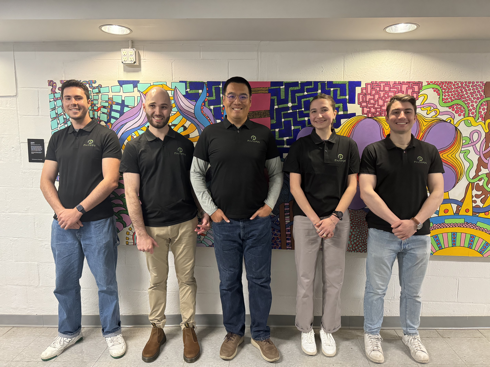
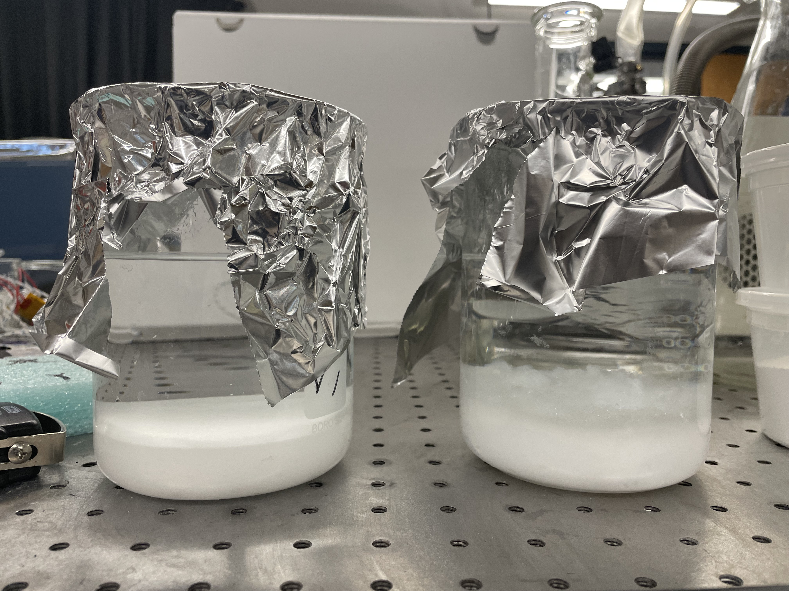
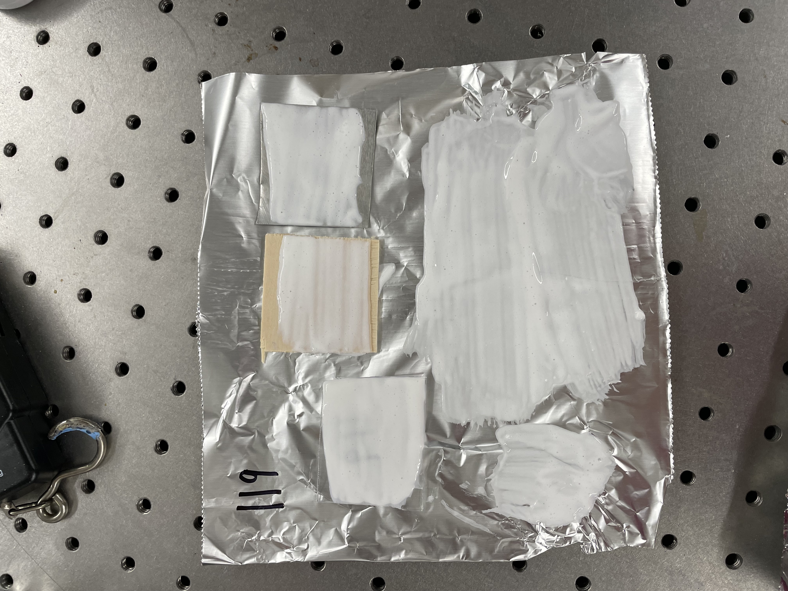
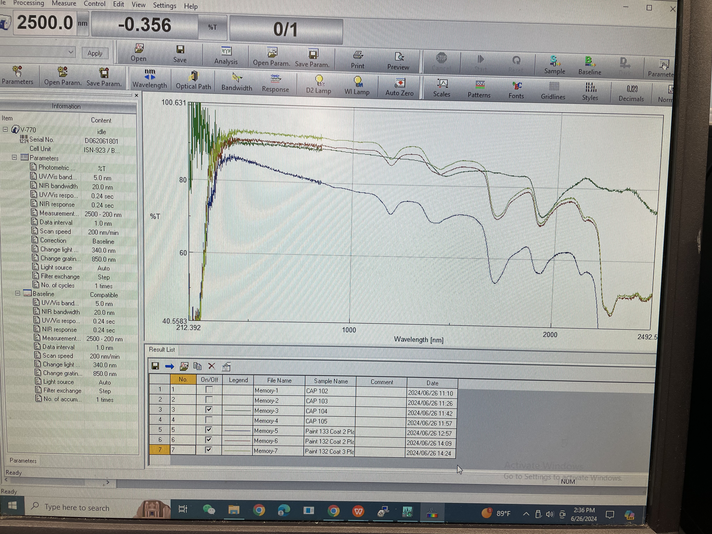
We built sheds to compare our paint with a commercial paint. In order to keep track of surface temperatures, ambient temperatures, and humidity, I built a temperature measurement system that uploaded data to a live IoT dashboard, providing real-time feedback.
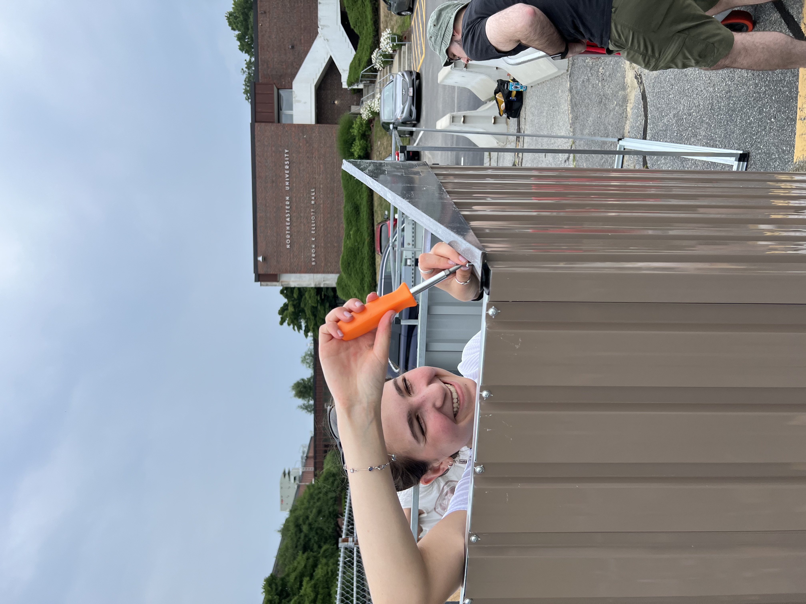
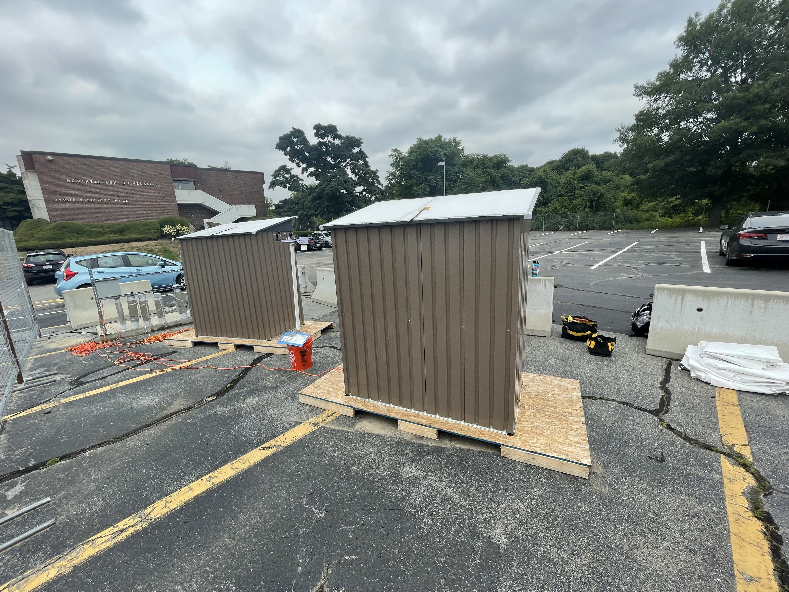
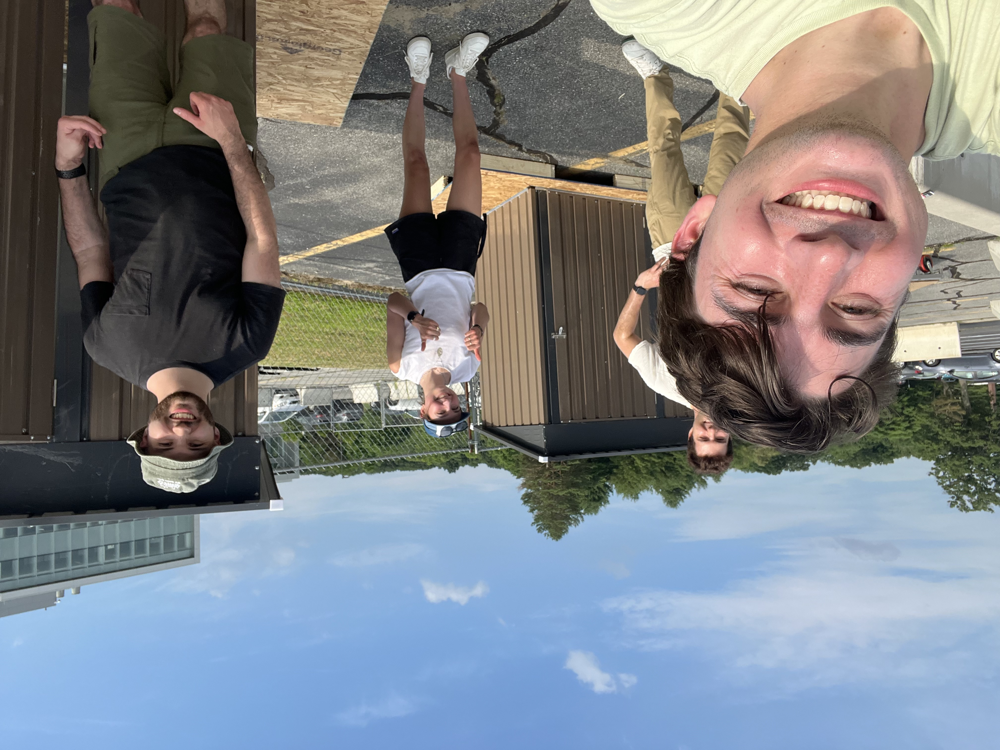
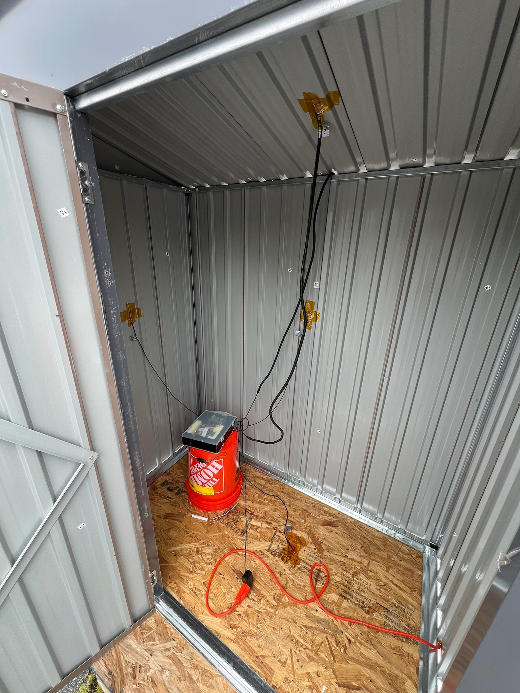
I built an integrated temperature measurement system using a RaspberryPi, six temperature probes, humidity probes, and a 4G LTE modem to track test data and upload it to a live IoT dashboard, generating figures in real time.
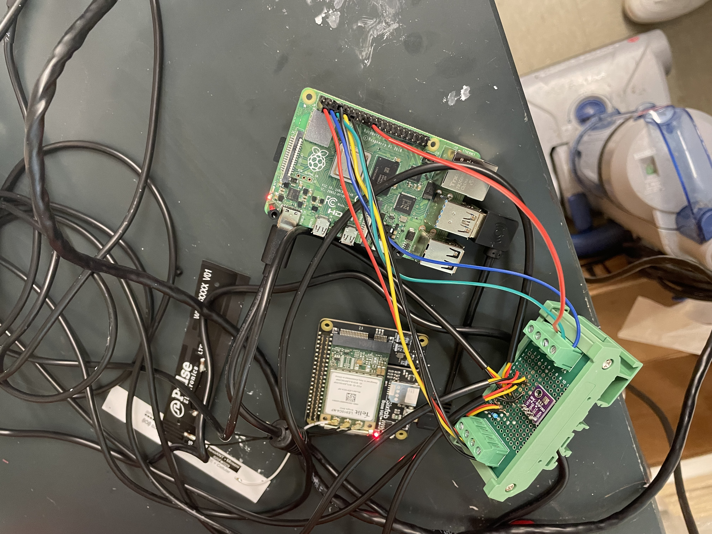
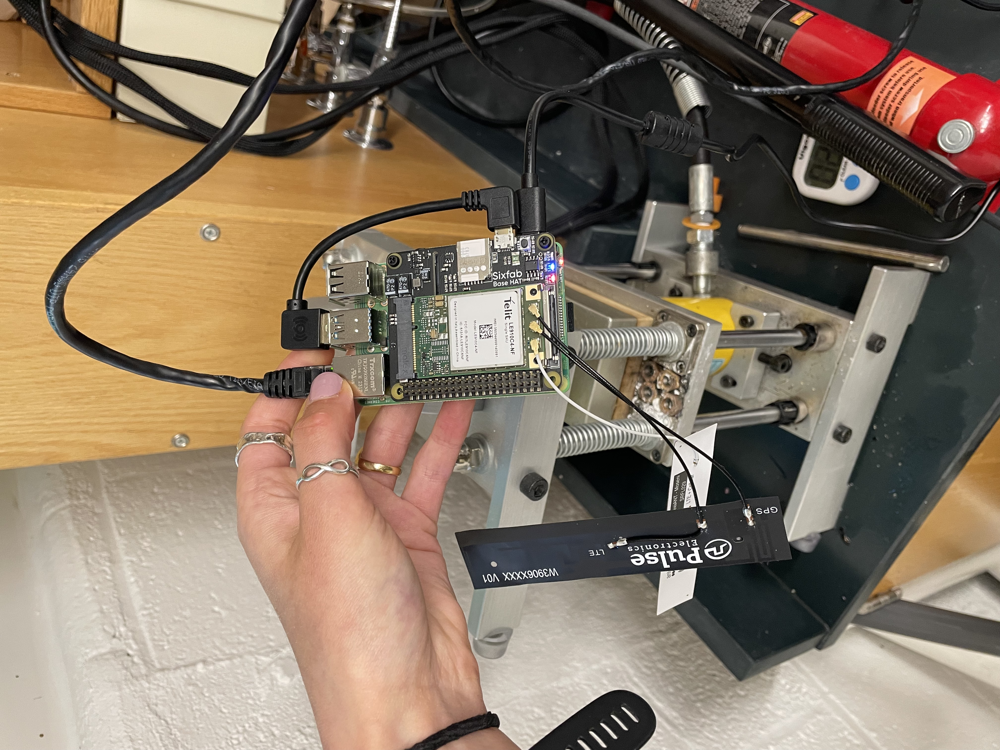
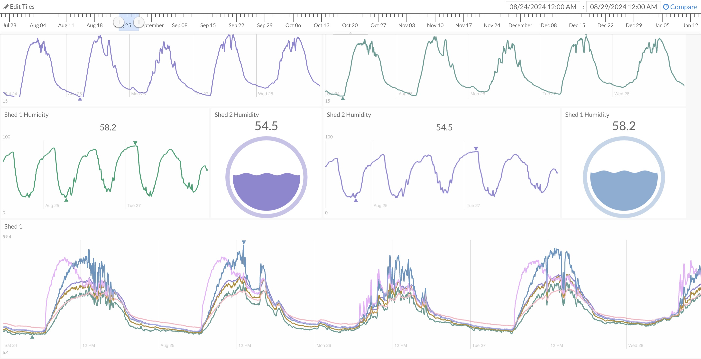